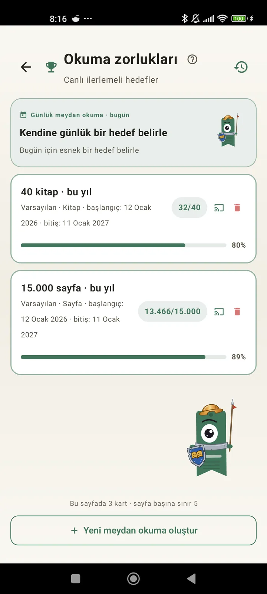

Bir okur olarak kendini tanı
Okumandan en iyi şekilde yararlanman için meydan okumalar, bingolar, widget'lar ve daha fazlası. 3.7'de yeni: meydan okuma ve bingo widget'ları.

Okuma meydan okumaları
Sayfa, seri veya türe göre hedefler koy. Ücretsiz 15'e kadar aktif meydan okuma, Pro ile sınırsız. Ayrıca sınıra sayılmayan, özelleştirilebilir günlük bir meydan okuma.

Günlük meydan okuma
Her gün yeni bir hedef. Serini sürdürmek için meydan okumayı gece yarısından önce tamamla.

Okuma Bingo'su
Her ay temalı karelerle iki yeni bingo. Satırları, sütunları ya da kartın tamamını tamamla.

Haftalık özet
Her pazartesi haftana kısa bir bakış: okunan sayfalar, toplam süre, seri ve bir öncekiyle karşılaştırma.

Aylık özet
Bir ay bittiğinde Lecturameter hepsini toparlar: sayfalar, süre, bitirilen kitaplar, gün gün temponun ve ayın kitabı.

Bingo widget'ı Pro
Bu ayın bingo kartı her an gözünün önünde: tamamladığın kareler ve oluşturduğun çizgilerle.

Kitap widget'ı Ücretsiz
Okuduğun kitabı doğrudan ana ekranında gör: kapak, başlık, yazar, sayfalar ve ilerleme yüzdesi, hep güncel. İstediğin yere sığması için yeniden boyutlandırılabilir.
Cidden kardeşim, bu uygulama terapi gibi, günde birkaç sayfa okumaktan günde yaklaşık 20 sayfaya çıktım ve gelişmeye devam ediyorumKullanıcı geri bildirimi, e-postayla gönderildi

Aylık karşılaştırma Pro
Uygulamayı açmadan son aylarına hızlı bir bakış. Her ayın sayfaları için çubuklar, içinde bulunduğun ay vurgulanmış; bu ay geçen aydan iyi mi kötü mü gidiyorsun bir bakışta anlarsın.

Meydan okuma widget'ı Pro
Aktif meydan okumaların ve ilerlemen ana ekranında. Hangilerinin gösterileceğini Meydan okumalar ekranından seç.